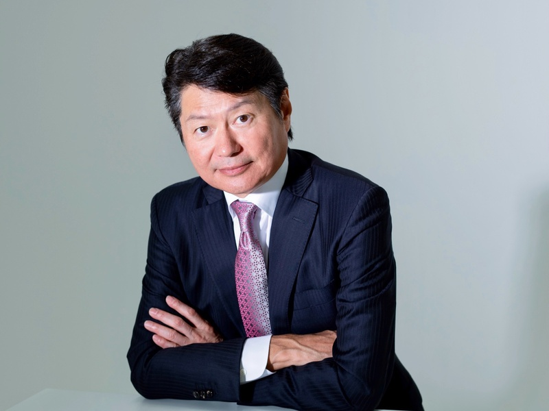

CEO STORY
プロ患者社長とは
「プロ患者社長」——それは、ステージ4重複がんを経験した経営者が自らに課したミッションの名称だ。二つの異なるがんが同時に存在するという状況の中で、岡部が気づいたのは、日本の医療システムの構造的な問題だった。
情報の非対称性、患者の選択肢の少なさ、経済的負担の大きさ——これらはすべて、経営の視点で解くことができる課題だ。アクセンチュア仕込みの問題解決力と、患者としての当事者経験を掛け合わせることで、誰も作り得なかった解決策が生まれる。
X・noteを通じて、医療の選択肢・治療費の現実・患者が知るべき情報を発信し続けると同時に、「がん共済アイリス」「ウェルフォート」などの事業で、経済的な壁を取り除く仕組みを作っている。
「経営の力で、患者の孤独をなくしたい。
それが今の私の、いちばん大切な仕事です。」
